Customize the ribbon options
You can customize the ArcGIS Pro ribbon by creating tabs and choosing which commands appear on them. You can also add new groups and commands to existing tabs.
Follow these steps to access the Customize the Ribbon options:
- Open the ArcGIS Pro settings page in one of the following ways:
- From an open project, click the Project tab on the ribbon.
- From the start page, click the Settings tab
 .
.
- In the list of side tabs, click Options.
- On the Options dialog box menu, under Application, click Customize the Ribbon.
 Tip:
Tip:You can also open the options in the following ways:
- Right-click any ribbon tab or command and click Customize the Ribbon.
- Click the Help tab on the ribbon. In the Customize group, click Ribbon .
Add tabs, groups, and commands to the ribbon
You can organize functionality by adding commands to new groups on existing ribbon tabs or new tabs. At any time, you can remove specific customizations or reset the ribbon to its default state.
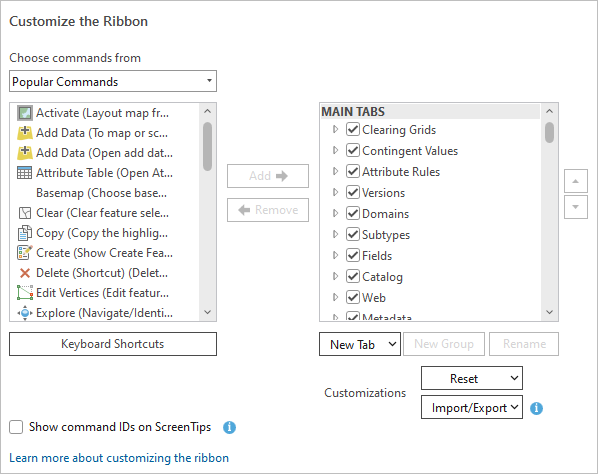 |
Add groups and commands
The following video shows you how to add groups and commands to existing ribbon tabs.
- Video length: 0:43
- This video was created with ArcGIS Pro 3.2
The most common way to customize the ribbon is to add commands to a new group on an existing tab.
- Open the Customize the Ribbon options.
- In the scrolling window on the right, representing ribbon tabs and groups, browse to the tab to which you want to add a group.
- Select the tab. Optionally, expand the tab to see its groups.
- Click New Group.
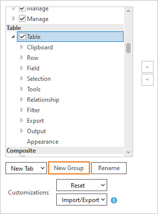
In this example, the Table tab under the Table heading is selected.A new group named New Group (Custom) is added under the other groups on the tab.
- With New Group (Custom) selected, click Rename.
- On the Rename dialog box, change the display name and click OK.
- In the Choose commands from drop-down list, accept the default Popular Commands option or click the drop-down arrow and choose a different option:
- All Commands
- List of Tabs
- Popular Geoprocessing Tools
- All Geoprocessing Tools
Tip:If you choose All Commands or All Geoprocessing Tools, a search box appears to help you find commands or tools.
- In the scrolling window of commands, browse to or search for the command you want to add.Tip:
Widen the Options dialog box to see the full command names. Hover over a command to see a short description of its behavior.
- Select a command and click Add.
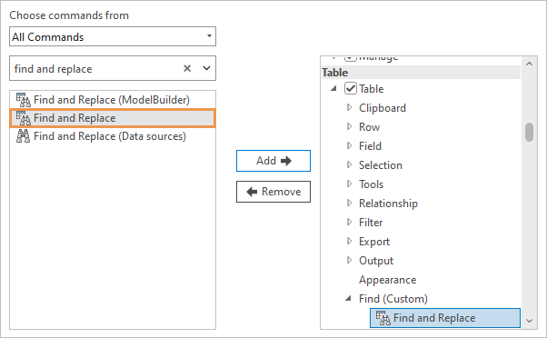
In this example, the command to find and replace table values is added to a new group named Find.Tip:Use the arrow buttons on the right side of the dialog box to change the order of groups on a tab or the order of commands in a custom group. You cannot change the order of commands in built-in groups.
- Click OK.
- Return to your project or open a project. On the ribbon, click the tab to which you added the new group.
The group and its command or commands appear on the tab.
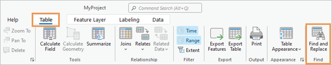
In this example, the Find and Replace command is available on the Table tab, which appears when a table view is active.
Add a new tab
The following video shows you how to add a new tab to the ribbon.
- Video length: 0:54
- This video was created with ArcGIS Pro 3.2
You can add a new tab to the ribbon to organize commands that are not grouped on the ArcGIS Pro interface by default.
- Open the Customize the Ribbon options.
- Under the scrolling window on the right (representing ribbon tabs and groups), click the New Tab drop-down arrow and click New Tab.
In the window, a new tab and new group are added at the bottom of the Main Tabs heading. On the ribbon, the new tab will appear to the right of other core tabs by default.
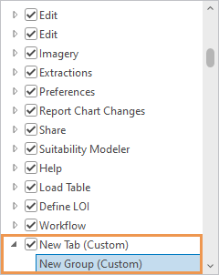
 Note:
Note:You can place a new tab in a different position by selecting an existing tab before adding the new tab. This is not recommended because the new tab may not appear in the expected position in all situations.
- Click New Tab (Custom) to select it and click Rename.
- On the Rename dialog box, change the display name and click OK.
- Under the new tab, click New Group (Custom) to select it. Click Rename and rename the new group. Click OK.
- Optionally, select the new tab and add more groups. When you're finished, select a group to which to add commands.
- In the Choose commands from drop-down list, accept the Popular Commands setting or click the drop-down arrow and make a different choice.
- In the scrolling window of commands, browse to or search for a command. Select the command and click Add.
- Optionally, add more commands to the group. When you're finished, click OK.
- Return to your project or open a project to see the customization.
Add a new contextual tab
Contextual tabs appear on the ribbon when the application is in a particular state. For example, when an attribute table is the active view, a contextual Table tab appears. When you add a custom contextual tab, it must appear together with an existing contextual tab.
- Open the Customize the Ribbon options.
- In the scrolling window on the right (ribbon tabs and groups), scroll down past the tabs listed under Main Tabs to the contextual tab headings.
- Under a heading, click a contextual tab with which your new tab will be grouped.
For example, to add a contextual tab that appears together with the Time contextual tab, scroll to the Map heading and click the Time tab.
The Time contextual tab appears on the ribbon when a map is active and the time property is enabled on a map layer.
- Click New Tab and click New Tab with Context.
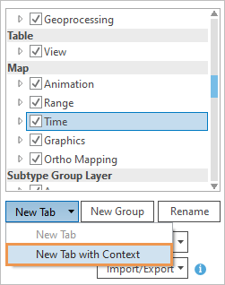
In the window, a new tab and new group are added under the contextual tab.
- Click New Tab (Custom) to select it and click Rename.
- On the Rename dialog box, change the display name and click OK.
- Under the new tab, click New Group (Custom) to select it. Click Rename and rename the new group. Click OK.
- Optionally, select the new tab and add more groups. When you're finished, select a group to which to add commands.
- In the Choose commands from drop-down list, accept the Popular Commands setting or click the drop-down arrow and make a different choice.
- In the scrolling window of commands, browse to or search for a command. Select the command and click Add.
- Optionally, add more commands to the group.
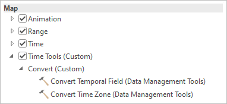
Convert Temporal Field and Convert Time Zone are geoprocessing tools available in the All Geoprocessing Tools list. - When you're finished, click OK.
- Return to your project or open a project to see the customization.
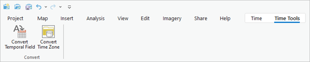
Note:To see the customization, you must create the conditions under which the contextual tab appears. In this example, the time property must be enabled on a map layer.
Search for commands using command IDs
Some commands have the same or similar names but work in different contexts. For example, one Select By Attributes command works on maps and another one works on tables. When you search for commands on the Customize dialog box, it may be hard to know which one is right for your purpose. However, every command has a unique ID that can be displayed on the user interface. You can use the command ID to confirm that you are adding the command you need to a custom group.

- Video length: 0:46
- This video was created with ArcGIS Pro 3.2
- Open the Customize the Ribbon options.
- Check the Show command IDs on ScreenTips check box.
- Click OK.
- Return to your project or open a project. Hover over a command on the ribbon to display its ScreenTip.
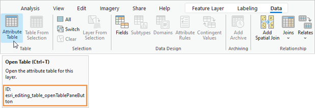
- Right-click the command and click Copy Command ID.Note:
You can copy a command ID on the ribbon whether or not its command ID is shown. However, command IDs cannot be copied for context menu commands. For these commands, you must display the command ID to identify it.
- Open the Customize the Ribbon options.
- In the Choose commands from drop-down list, select All Commands.
- Right-click in the Search box and click Paste.
The command is found and can be added to a custom group.
- Optionally, uncheck the Show command IDs on ScreenTips check box.
- Click OK.
Remove commands, groups, and tabs from the ribbon
You can remove custom commands, groups, or tabs that you have added to the ribbon. You cannot remove built-in tabs. You can also hide built-in and custom tabs.
Remove custom commands, groups, and tabs
To remove custom commands, groups, and tabs, complete the following steps:
- Open the Customize the Ribbon options.
- In the scrolling window on the right (ribbon tabs and groups), browse to and select a custom tab or group, or select a command that you added to a custom group.
- Click Remove. Alternatively, right-click the selected item and click Remove.
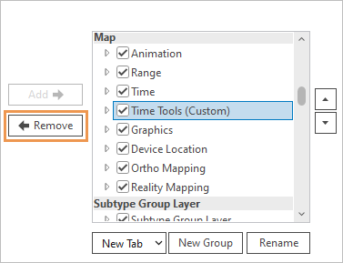
In this example, a custom contextual tab is removed.Note:Removing a tab removes its groups and their commands. Removing a group removes its commands.
- Click OK.
Hide tabs
You can hide built-in and custom tabs to simplify the user interface. Hidden tabs are not shown on the ribbon but are not removed from the Customize the Ribbon options.
- Open the Customize the Ribbon options.
- In the scrolling window on the right (ribbon tabs and groups), uncheck the check boxes next to any tabs that you want to hide.
- Click OK.
The tabs no longer appear on the ribbon. To show them again, open the Customize the Ribbon options and check their check boxes.
Export and import customizations
You can import and export your customizations to use on different computers or to share with others.
Export customizations
If you have customized the ribbon, the Quick Access Toolbar, or keyboard shortcuts, you can export the customizations to a file.
- Open the Customize the Ribbon options.
- Click Import/Export and click Export customizations.
- On the browse dialog box, browse to the folder where you want to save the file.
- In the Name text box, type a name for the file.
- Click Save.
The customization file is saved with the .proExportedUI file extension.
Import customizations
You can import ribbon customizations from a .proExportedUI file.
- Open the Customize the Ribbon options.
- Click Import/Export and click Import customization file.
- On the browse dialog box, browse to the folder that contains the customization file. Select the file and click OK.
A prompt asks if you want to replace all existing ribbon and Quick Access Toolbar customizations.
Caution:Any current customizations to the ribbon, Quick Access Toolbar, or Keyboard Shortcuts dialog box will be lost when you import the file. Click No to keep your current customizations.
- On the prompt, click Yes.
- Click OK on the Options dialog box.
The customizations specified in the file are applied to the ribbon.
Reset customizations
Use the Reset button to reset a selected tab or all tabs to their default configuration.
- Open the Customize the Ribbon options.
- In the scrolling window on the right (ribbon tabs and groups), browse to a tab that contains a custom group and select the tab.
The tab cannot be a custom tab itself.
- Click the Reset drop-down arrow and click Reset Selected Item.
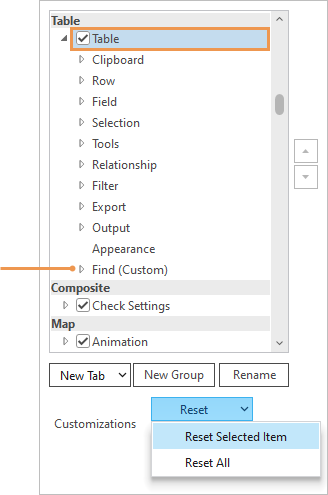
In this example, the custom Find group is removed from the Table contextual tab. If there were other custom groups on the tab, they would also be removed.All customizations are removed from the selected tab. Customizations to other tabs are not affected.
Note:To remove all customizations from the ribbon, including those imported from a file, click Reset All. This resets the ribbon to its default configuration. Customizations to the Quick Access Toolbar are reset in the Quick Access Toolbar options. Customizations to keyboard shortcuts are reset on the Keyboard Shortcuts dialog box.
Configure keyboard shortcuts
A keyboard shortcut runs a command with a key or keystroke combination. ArcGIS Pro has many default shortcuts that you can modify. You can also create shortcuts for commands that don't have them. The workflow is similar to configuring shortcuts from the ribbon.
Learn more about customizing keyboard shortcuts
- Open the Customize the Ribbon options.
- In the commands window, browse to or search for a command for which you want to add or modify a shortcut. Select the command.
- Under the list of commands, click Keyboard Shortcuts.
The Keyboard Shortcuts dialog box appears. The shortcuts group for the active view is expanded. If there are no active views (for example, if no project is open), the Global shortcuts group is expanded.
- If the command already exists in the shortcuts group, the shortcut is selected and ready to edit.
- If the command does not exist in the group, it is added. The Press a key message prompts you to define a keystroke.
- If the command does not support a shortcut, an error message appears at the top of the Keyboard Shortcuts dialog box.
Make sure that the active view in the project is appropriate for the command. For example, if you select the Full Extent command when a table view is active, the command will be added to the Table group of shortcuts. It will have no effect because the command works on maps, not tables.
Tip:Before selecting a command, click Keyboard Shortcuts and search for the command to see whether it already has a shortcut.
- In the Keyboard Shortcuts dialog box, define a shortcut for a new command or modify an existing shortcut, as appropriate.
- Click Save.